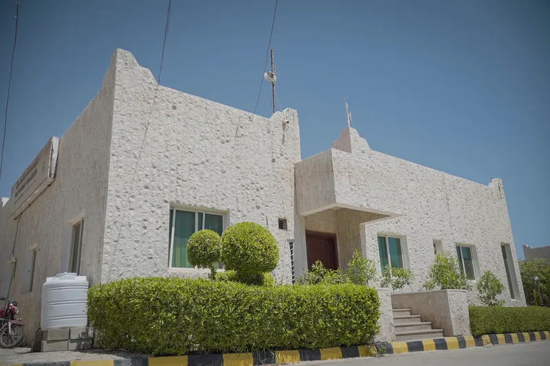
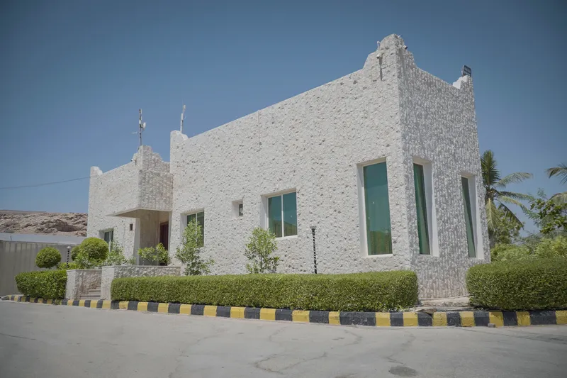
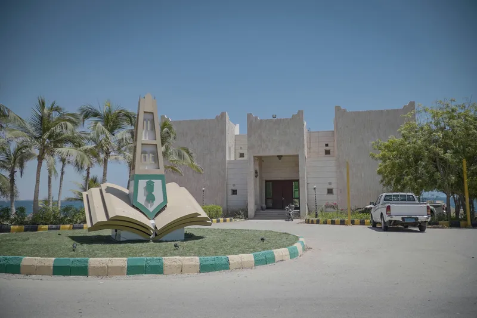
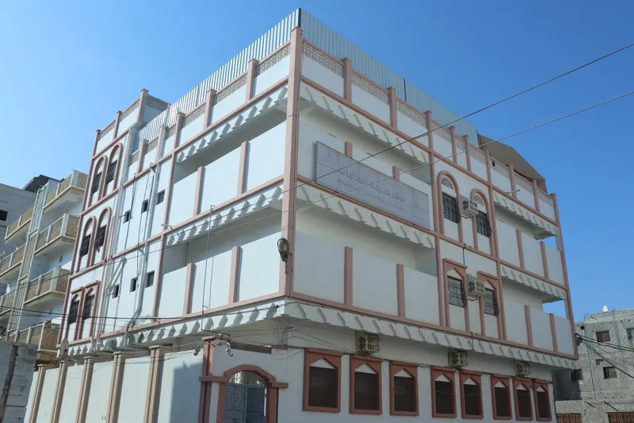

مؤسسة حضرموت
تنمية بشرية
نعمل على تمكين العقول الطموحة من خلال توفير بيئة سكنية تعليمية آمنة ومحفزة، لنصنع جيلاً من القادة المبدعين في مختلف المجالات العلمية.

"مؤسسة رائدة في المجال التعليمي والإداري"


عن المؤسسة
تأسست مؤسسة حضرموت تنمية بشرية لتكون الحاضنة الأولى للمتميزين، موفرة أكثر من مجرد مأوى؛ بل مجتمعاً أكاديمياً متكاملاً يدعم الطالب في رحلته الجامعية من خلال مرافق حديثة وبرامج إثرائية مستمرة.
أمان تام
تقنية متطورة
مراكزنا الطلابية
تقدم مرافق متخصصة تلبي احتياجات الطلاب والطالبات

للطلاب
مركز أحمد للطالب الجامعي
التابع لمؤسسة حضرموت - تنمية بشرية

للطالبات
مركز خديجة للطالبات
التابع لمؤسسة حضرموت - تنمية بشرية